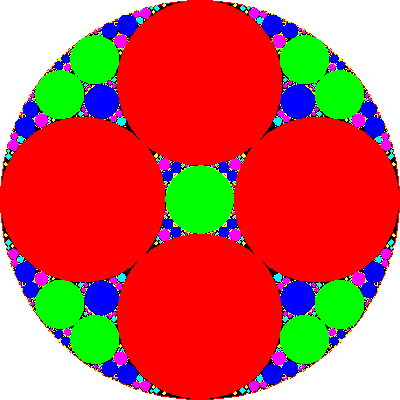

The general idea should be clear.
First find a circle containing all the limit points, then find circles containing no limit points.
The inverses of the latter also contain no limit points, the inverses of the inverses contian no limit points, and so on.
Here are the next few generations, and then the limit set.
|  |
| Click the picture for the limit set. |
Return to Mandelbrot's method.